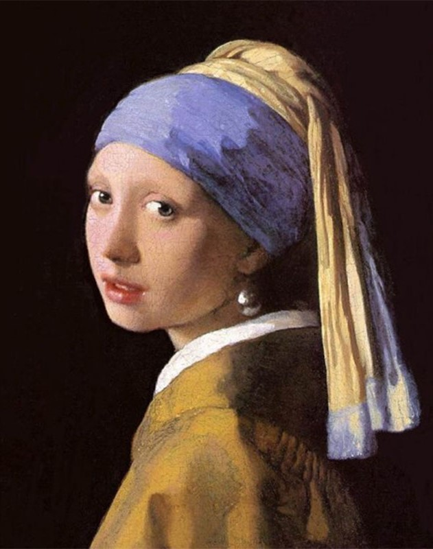
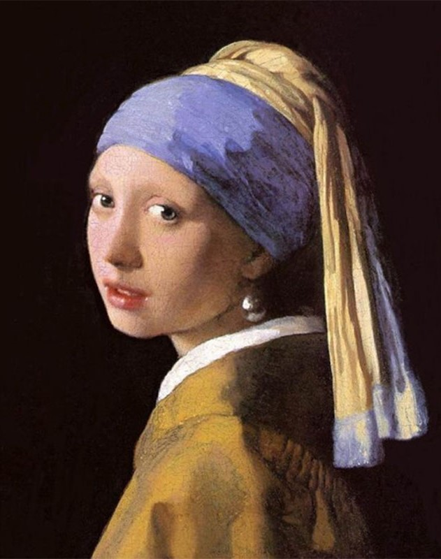

Art has always been a way of expressing ourselves in a way that a normal conversation could not. A way to transmit our experiences, perspectives, emotions and sufferings.
A generally standard definition of art is: the use of creative imagination to produce work that expresses certain meanings and ideas, typically with the intention of aesthetic beauty and/or emotional potency . However, arguably, what makes something art is less about what it is and more about what it does and how it interacts with the world around it .
Traditionally, art has promoted the good aspects of life and humanity, pointed out and often ridiculed the bad, and expressed the funny, weird, somber, and often dark realities we all share, but rarely talk about.
Arguably, art is art so long as its reason for being art can be properly elaborated or defended by either the creator or the consumer . And that’s what I am going to do here for a strange, new form of art within the 21st century known as memes.
Admittedly, it might sound foolish to consider or discuss memes with any level of seriousness, to hold a crude image with text on it next to that of a beautifully constructed painting might sound like an insultingly far reach, and by no means does this essay intend to discredit the beauty and talent found in any work of art. However I intend to say that the nature of art permits such a claim.